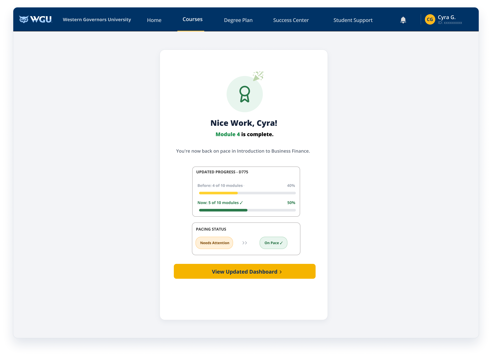
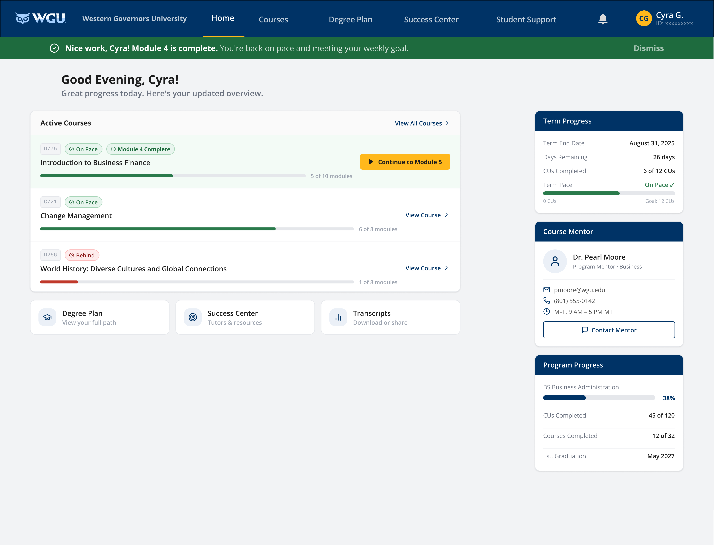

01 · UX RESEARCH · UI DESIGN · MICRO-INTERACTIONS
WGU Student Pacing & Nudge Alert System
Designing micro-interactions and proactive nudge alerts for the WGU student portal to support course pacing and reduce student friction.
In self-paced online learning environments, students often lose momentum without clear, structured milestones. This project focused on creating timely, non-intrusive micro-interactions and nudge alerts inside the WGU student dashboard to keep learners informed of their pacing status without introducing cognitive overload.
How can clear micro-interactions and proactive portal nudges help students stay on pace with course modules while maintaining high motivation and clarity?
Pattern & Interaction Design
Designed subtle visual feedback cues, completion screens, and dashboard progress bars to signal milestone accomplishments.
Remote Usability Testing (Maze)
Executed an unmoderated remote usability study via Maze with 21 participants using a blend of Opinion Scale blocks and open-ended qualitative prompts:
- — Alert Clarity — Evaluated how quickly participants recognized their current pacing status from the dashboard view.
- — Motivation & Sentiment — Measured whether completion notifications felt rewarding versus intrusive.
- — Navigation Speed — Tracked clickpaths to ensure nudge calls-to-action directed users seamlessly back to active coursework.


- — High task completion rate across all 21 Maze participants evaluating the nudge alert workflow.
- — Positive qualitative feedback on notification tone, balancing encouragement without feeling punitive.
- — Validated prototype ready for design system integration.
Testing micro-interactions with real users reinforced that copy tone and visual hierarchy are just as important as mechanics when giving status updates. Small design decisions—like affirming progress before nudging the next action—significantly impacted student confidence during study sessions.